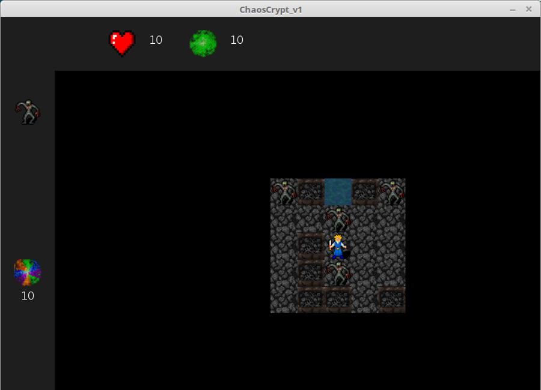
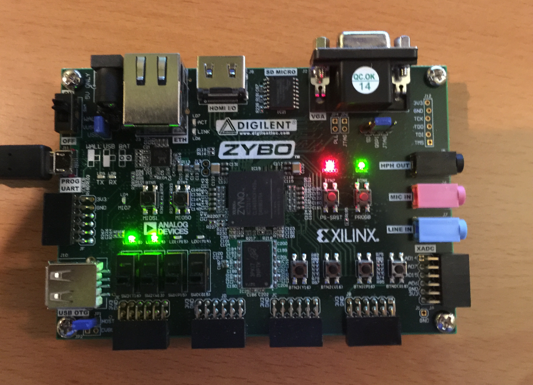

MY WORK
Here is some of my favorite work.




Do you ever question what beauty is?
Shelby does, and has taken to art as a way for people to think about and hopefully discuss the problems that standards of beauty create.
Shelby Berryann

She hopes her cartoonlike and satirical take on the human body parts typically considered sexy will allow viewers to gain an appreciation for what it is like to have breasts and the ugly reality of life in an age where it is drowning in advertisements and media.
Shelby has worked with oil painting, acrylic painting, watercolor, figure drawing, sculpture, and 3D printing classes. Her interests expand beyond a wide range of mediums, however her preferred method is acrylic painting.
Shelby is always available for commissions, conferences, showings, art sales, galleries, museums, presentations, and more.
For inquiries she can be contacted through one of the following:
shelbynoelle.art@gmail.com
snoellebackgrounds@gmail.com
Check out some of my sites:
shelbynoelleart/